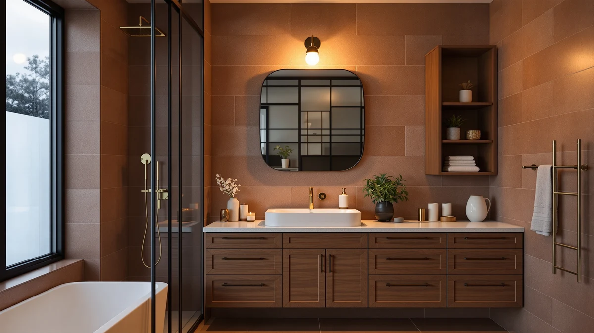

Best Bathroom Storage Units (2026)
Prices and picks verified as of September 2026. Independent, reader-supported reviews.


Quick Answer
The Kitsure Over Toilet Storage Rack is our top pick among the best bathroom storage units because it pairs a sturdy 3-tier metal and wood frame with the lowest price in this lineup at $29.99. If you want closed-door storage instead of open shelving, the Yaheetech Over The Toilet Cabinet hides clutter behind two doors for about the same money.
Our pick: Kitsure Over Toilet Storage Rack — $29.99 Check Price on Amazon
Bottom line: our top pick is the Kitsure Over Toilet Storage Rack - Metal Over Toilet Bathroom at $29.99. The best budget option is the Simple Trending Over The Toilet Storage Cabinet at $29.99.
Things to Know Before You Buy
- Measure the space between your toilet tank and the nearest wall or window before you buy. Most bathroom storage units in this guide range from 63 to 70 inches tall and need at least 9 to 13 inches of depth to clear the tank.
- Open shelving costs less than a cabinet with doors, but a cabinet hides clutter better and works well in a bathroom that doubles as a guest bath.
- Weight capacity is listed per shelf, not per unit. Spread heavier items like towel stacks across multiple shelves instead of loading one tier.
- Freestanding units straddle the toilet tank and do not need wall anchors, though an anti-tip strap is worth using if kids or pets share the bathroom.
- Metal and wood construction dominates this category. Owners consistently report that the wood veneer scratches more easily than the metal frame, so treat it gently during assembly.
Finding the best bathroom storage units for a small bathroom comes down to how much floor space you can give up, how much weight the shelves need to hold, and whether you want your towels and toiletries on display or behind a door. A standard toilet tank eats into your options fast, and a rack that looks compact in a product photo can still crowd a narrow bathroom once it is assembled.
We built this guide by comparing seven over-the-toilet units that are currently available on Amazon, using their listed dimensions, materials, and prices alongside patterns in verified owner reviews. None of these units require a professional installer. Most bolt together with basic tools and stand on their own around the toilet tank, so the real decision is sizing the footprint to your bathroom and picking open shelves or a closed cabinet.
Our pick for the best bathroom storage units overall is the Kitsure Over Toilet Storage Rack. At $29.99, it costs less than every other unit here except the Simple Trending rack, and its 3-tier metal and wood frame gives you enough shelving for towels, tissue, and toiletries without overwhelming a small bathroom. If you need more width or prefer doors that hide clutter, the picks below cover those cases too.
Why You Should Trust Us
This guide to the best bathroom storage units is written by Ilane Tall, who covers bathroom storage and small-space organization for Best Bathroom Storage. We do not run a fake testing lab or claim to have installed every unit in our own bathrooms. Instead, we research published dimensions, material specs, and pricing directly from the manufacturer listings, then cross-reference that against patterns in verified buyer reviews to flag anything a spec sheet leaves out, like a shelf that owners say wobbles under weight or an assembly step that trips people up.
How We Picked
We started by limiting this list of bathroom storage units to over-the-toilet models built specifically to straddle a standard toilet tank, since freestanding shelving units and wall cabinets solve a different problem. From there we compared height, width, depth, and shelf count across each listing to make sure the group covered a real range of budgets and bathroom sizes rather than seven near-identical racks. We also read through verified owner reviews for recurring complaints about stability, hardware quality, and assembly, and we weighed price against material quality so the cheapest unit and the most expensive one both earned their spot for a specific reason.
How We Compared
We compared these bathroom storage units side by side on four factors: price per shelf, overall footprint, build material, and what verified reviewers say holds up over time. Two units built from the same metal and wood combination can still perform differently, so we looked closely at shelf spacing and stated weight limits rather than assuming similar materials mean similar durability. Reviewers consistently note that units with a wider base feel more stable once loaded, so we call that out for each pick below where it applies.
Our Picks

Kitsure Over Toilet Storage Rack
What we like
- Lowest price in this lineup at $29.99
- 3-tier metal and wood frame gives you separate zones for towels, tissue, and toiletries
- Compact 63.2-inch height clears most standard toilet tanks without crowding a small bathroom
Flaws but not dealbreakers
- Open shelves leave everything on display, so clutter shows
- Owners report the wood shelf surface can scratch if you rush assembly
| Material | Metal / wood |
| Size | 3 Tiers (63.2"H) |
The Kitsure Over Toilet Storage Rack is our top pick among the best bathroom storage units because it does not ask you to spend more to get a stable, usable shelf. The frame combines a metal skeleton with wood-finish shelving across three tiers, standing 63.2 inches tall, tall enough to clear a standard toilet tank while staying low enough to feel proportional in a small bathroom. At $29.99, it undercuts every other unit in this guide except the Simple Trending rack, and it does so without dropping to a single flimsy shelf.
Owner reviews point to the three-tier layout working well for separating everyday items: extra towels on the bottom, tissue in the middle, and smaller toiletries up top. The tradeoff is that open shelving puts all of that on display, so this pick suits a bathroom where you do not mind visible storage more than one where you want everything hidden. Assembly involves connecting the metal frame pieces to the wood shelves, and owners say to handle the shelf edges carefully since the finish can pick up scuffs if you force a tight-fitting bracket.

Spirich Over The Toilet Storage
What we like
- 9-inch depth leaves room for storage bins and baskets that shallower racks cannot hold
- 24.8-inch width spreads weight across a wider base for extra stability
- Standing 66 inches tall, it makes use of vertical wall space above the tank
Flaws but not dealbreakers
- Costs more than three other picks in this lineup
- The extra depth means it protrudes further into the room than slimmer racks
| Material | Metal / wood |
| Size | 24.8" (W) x 9" (D) x 66" (H) |
The Spirich Over The Toilet Storage stands out for its 9-inch depth, which is deeper than most of the other units we compared. That extra inch or two matters if you plan to use storage bins or baskets instead of stacking loose items directly on the shelves, since shallower racks tend to let bins overhang the edge. At 24.8 inches wide and 66 inches tall, it also gives you a wider base than the budget picks in this guide, which helps it feel steadier once loaded.
At $92.99, this unit costs more than most of the group, and that premium buys depth and width rather than extra features. It makes the most sense for a household that already owns bins or baskets sized for a deeper shelf, or for anyone storing bulkier items like spare toilet paper packs and folded towels. If your bathroom is narrow, the added depth is worth measuring against your available clearance before you buy.

Homhedy Over The Toilet Storage
What we like
- 30.7-inch width is the widest in this lineup, giving you the most shelf surface
- 7.8-inch depth balances capacity with a manageable footprint
- Wide base adds stability once shelves are loaded
Flaws but not dealbreakers
- The most expensive unit in this guide at $99.99
- A 30.7-inch width will not fit every narrow bathroom layout
| Material | Metal / wood |
| Size | 7.8"D x 30.7"W x 65.4"H |
The Homhedy Over The Toilet Storage is the widest unit we compared at 30.7 inches, which translates directly into more usable shelf space for a household that shares one bathroom. Combined with a 7.8-inch depth and 65.4-inch height, the frame gives you a larger surface area than any other pick here without going as deep as the Spirich rack, so it stays easier to navigate around in a smaller room.
That width comes at the highest price in this lineup, $99.99, and it is worth confirming your bathroom can accommodate the extra 5 to 6 inches of width compared with the narrower picks before ordering. For a shared bathroom or a household storing supplies for multiple people, the added surface area is the main reason to pay more here rather than choosing one of the narrower, cheaper racks.

Meilocar Over the Toilet Storage
What we like
- Five open shelves give you more distinct storage zones than the standard three-tier rack
- Metal and wood build matches the durability of the other picks in this guide
- More tiers make it easier to separate categories like towels, toiletries, and cleaning supplies
Flaws but not dealbreakers
- Five open shelves also mean five shelves of visible clutter if you do not stay organized
- At $83.99, it costs more than the simpler three-tier options
| Material | Metal / wood |
| Size | 5 Open Shelves |
The Meilocar Over the Toilet Storage trades a simple three-tier layout for five open shelves built from the same metal and wood combination as the rest of this lineup. The extra tiers matter most if you want to keep categories separate rather than piling items together, spare toilet paper on one shelf, folded towels on another, and daily toiletries within easy reach near the top.
At $83.99, this unit sits in the middle of the price range for this guide, and the added shelves are the main thing you are paying for over the three-tier picks. Because every shelf is open, keeping five tiers looking tidy takes more discipline than a three-shelf rack or a closed cabinet, so it suits someone who already sorts bathroom items into bins or baskets rather than storing loose items directly on the wood.

VASAGLE Over the Toilet Storage
What we like
- At 70 inches, it is the tallest unit in this lineup, making the most of unused wall space
- 24.6-inch width keeps the footprint manageable despite the height
- Priced at $69.99, it undercuts the two widest units in this guide
Flaws but not dealbreakers
- The extra height means the top shelf may be out of easy reach for some households
- A taller frame needs a level floor to stay stable long-term
| Material | Metal / wood |
| Size | 7.9"D x 24.6"W x 70"H |
The VASAGLE Over the Toilet Storage stretches 70 inches tall, the tallest unit we compared, while keeping its footprint to 24.6 inches wide and 7.9 inches deep. That combination lets it store more without spreading further across the floor, which matters in a bathroom where width is tighter than height. It uses the same metal-and-wood build as the rest of this lineup, just stretched vertically instead of widened.
At $69.99, it costs less than the two widest units in this guide while still offering strong vertical capacity. Reach is the tradeoff: a 70-inch-tall unit puts the top shelf well above eye level for shorter household members, so plan to use the higher shelves for items you access less often, like seasonal supplies or backup toiletries, rather than daily essentials.

Yaheetech Over The Toilet Cabinet
What we like
- Enclosed cabinet doors keep contents out of sight, unlike every open-shelf pick in this guide
- 25-inch width and 9-inch depth offer generous interior storage
- 66-inch height fits comfortably over a standard toilet tank
Flaws but not dealbreakers
- Doors add bulk and weight compared with open-shelf racks at the same price
- Finding items inside a closed cabinet takes an extra step versus grabbing off an open shelf
| Material | Metal / wood |
| Size | 9″D × 25″W × 66″H |
The Yaheetech Over The Toilet Cabinet is the only enclosed option in this guide, using two doors to hide whatever you store on its 25-inch-wide, 9-inch-deep shelves. For anyone who does not want towels, cleaning supplies, or extra toiletries visible every time they walk into the bathroom, that closed-door design is the clearest reason to choose it over the open-shelf picks above.
Priced at $69.99, it matches the VASAGLE unit despite adding doors and hardware. That is a fair trade if hidden storage matters more to you than quick, at-a-glance access. Owners weighing this pick against an open rack should consider how often they reach for bathroom items during the day. A cabinet suits infrequently used supplies better than items you grab multiple times daily.

Simple Trending Over The Toilet
What we like
- Matches the Kitsure rack as the cheapest unit in this guide at $29.99
- 13-inch depth is the deepest of any pick here, even the pricier options
- 24.25-inch width and 64-inch height suit most standard bathroom layouts
Flaws but not dealbreakers
- The added depth means it sticks out further from the wall than narrower racks
- Open shelving still leaves contents visible, same as the other budget pick
| Material | Metal / wood |
| Size | 24.25"W x 13"D x 64"H |
The Simple Trending Over The Toilet unit ties the Kitsure rack as the cheapest pick in this guide at $29.99, but it offers something the Kitsure does not: a 13-inch depth, deeper than every other unit here, including the pricier Spirich and Homhedy models. That extra depth means more usable shelf surface for the same low price, and it is worth a look even if you are not working with a strict budget.
The tradeoff for that depth is floor clearance. At 13 inches deep, this unit protrudes further into the bathroom than the slimmer picks, so it is worth measuring the distance from your toilet tank to the nearest fixture before ordering. For a bathroom with enough clearance, it delivers more storage volume per dollar than any other unit in this comparison.
Quick Comparison
Here is how all seven bathroom storage units in this guide stack up on material, price, and best use case.
| Product | Material | Price | Rating | Best for | Get it |
|---|---|---|---|---|---|
| Kitsure Over Toilet Storage Rack | Metal / wood | $29.99 | 4 | Small bathrooms, tight budgets | View on Amazon → |
| Spirich Over The Toilet Storage | Metal / wood | $92.99 | 4 | Extra depth for bins and baskets | View on Amazon → |
| Homhedy Over The Toilet Storage | Metal / wood | $99.99 | 4 | Widest shelving, shared bathrooms | View on Amazon → |
| Meilocar Over the Toilet Storage | Metal / wood | $83.99 | 4 | Sorting items across five shelves | View on Amazon → |
| VASAGLE Over the Toilet Storage | Metal / wood | $69.99 | 4 | Maximizing vertical wall space | View on Amazon → |
| Yaheetech Over The Toilet Cabinet | Metal / wood | $69.99 | 4 | Hiding clutter behind doors | View on Amazon → |
| Simple Trending Over The Toilet | Metal / wood | $29.99 | 4 | Deep storage on a tight budget | View on Amazon → |
How much weight can an over-the-toilet storage unit hold?
Most metal and wood over-the-toilet units, including every pick in this guide, list a per-shelf capacity between 15 and 30 pounds rather than a single total weight limit.
Do I need to mount a bathroom storage unit to the wall?
No.
The Competition
Every bathroom storage unit above earned its spot in this guide, but they are not interchangeable, and a few fell short of our top pick for specific reasons. The Homhedy and Spirich units cost noticeably more than the Kitsure rack without adding features that most bathrooms actually need, so they only make sense once you have a specific reason to want the extra width or depth. The Yaheetech cabinet is the only enclosed option here, which is exactly the point for some shoppers, but it loses out to the open racks on price for the storage volume you get.
We also considered whether the five-shelf Meilocar layout should be the default recommendation over the simpler three-tier Kitsure rack. Reviewers report that more shelves mean more opportunities for clutter if you are not already someone who sorts bathroom items into bins, so it lands as a secondary pick rather than our top choice for most bathrooms.
Frequently Asked Questions
How much weight can an over-the-toilet storage unit hold?
Most metal and wood over-the-toilet units, including every pick in this guide, list a per-shelf capacity between 15 and 30 pounds rather than a single total weight limit. Owner reviews are the most reliable way to confirm a specific model holds up under real bathroom items like stacked towels or a loaded storage bin instead of light decor alone.
Do I need to mount a bathroom storage unit to the wall?
No. Every unit in this guide is freestanding and straddles the toilet tank on its own legs, so there is no drilling required, which makes them all renter-friendly. Several manufacturers include an optional anti-tip strap, and it is worth using one in a household with kids or pets even though the units are stable on a level floor without it.
What is the difference between an open shelf rack and a storage cabinet?
Open shelf racks, like the Kitsure, Spirich, Homhedy, Meilocar, VASAGLE, and Simple Trending units in this guide, cost less and keep everyday items within easy reach. A cabinet with doors, like the Yaheetech pick, hides clutter completely but adds bulk and typically costs a bit more for the same amount of usable shelf space.